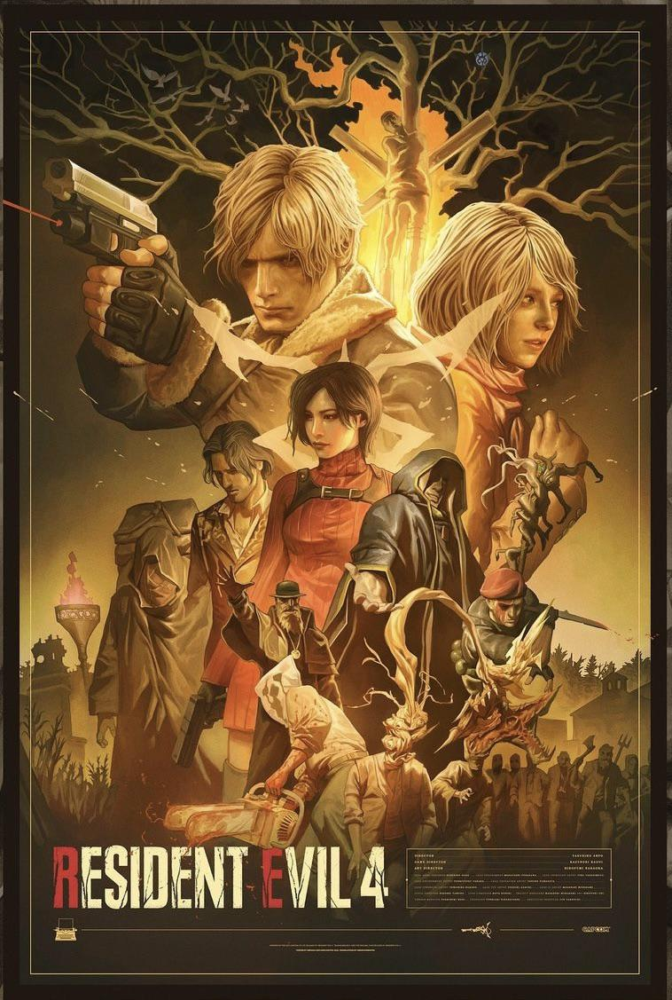
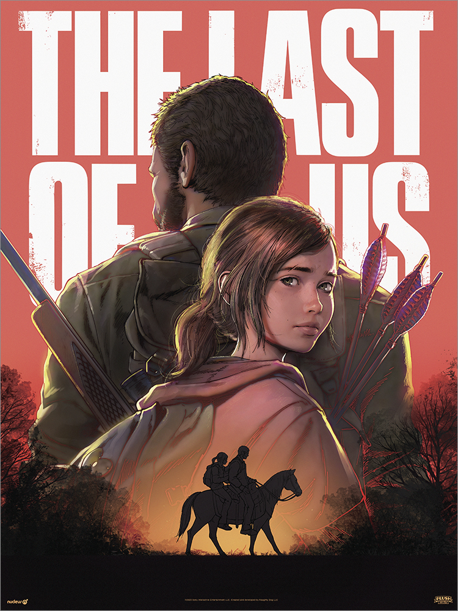
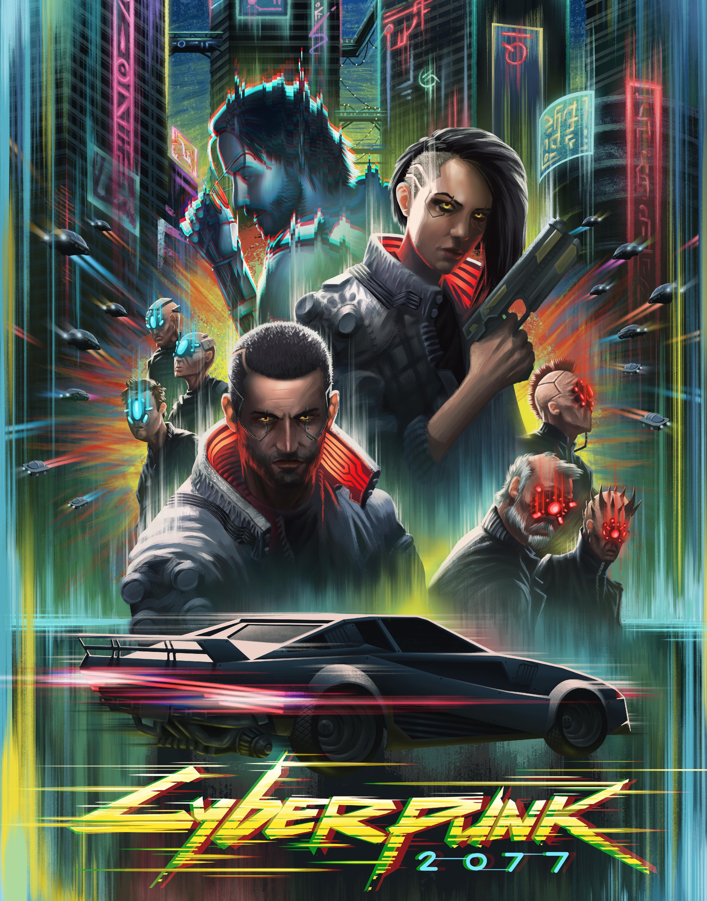
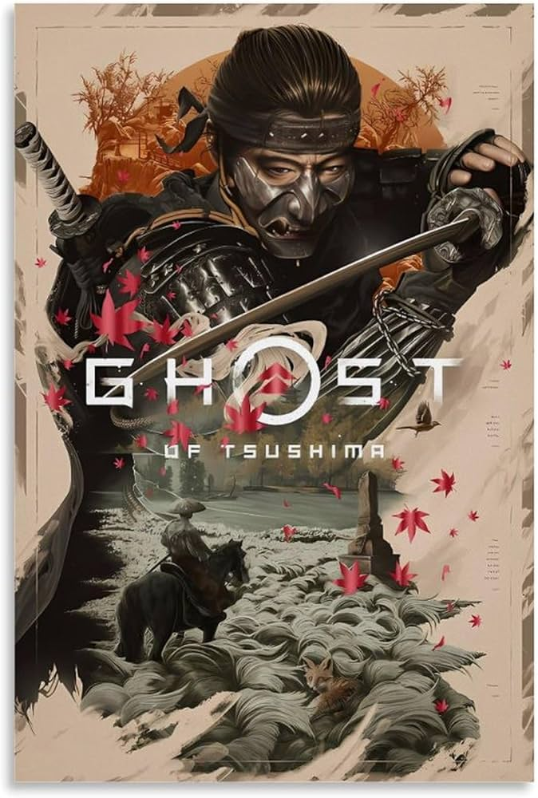
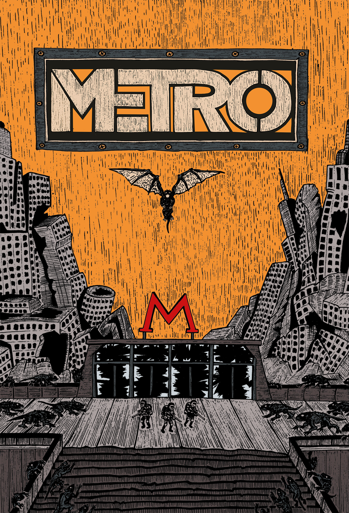
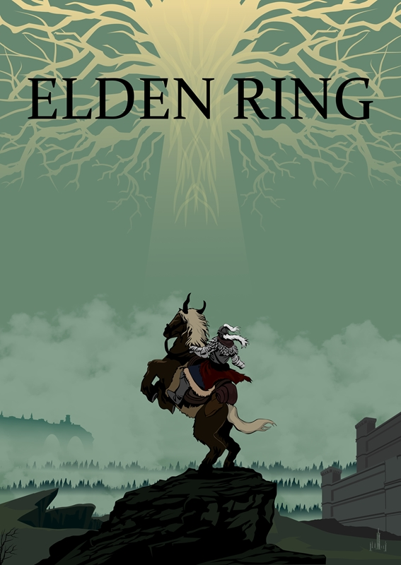

Resident Evil
Сюжет розгортається в Раккун-Сіті, охопленому зомбі-вірусом після витоку з лабораторій корпорації Umbrella...

Сюжет розгортається в Раккун-Сіті, охопленому зомбі-вірусом після витоку з лабораторій корпорації Umbrella...

Історія Джоела та Еллі, які перетинають постапокаліптичні Штати через двадцять років після пандемії...

Ви берете на себе роль Ві, найманця з Найт-Сіті, чия свідомість починає повільно стиратися цифровим привидом Джонні...

Сюжет переносить у 1274 рік на острів Цусіма під час монгольської навали. Самурай Дзін Сакай змушений переглянути свої погляди...

Глобальна ядерна війна змусила вцілілих переселитися в глибини метрополітену. Сюжет розповідає про Артема...

Історія Міжзем’я, де після руйнування Кільця Елден та зникнення королеви Маріки почалися війни між її напівбогами...